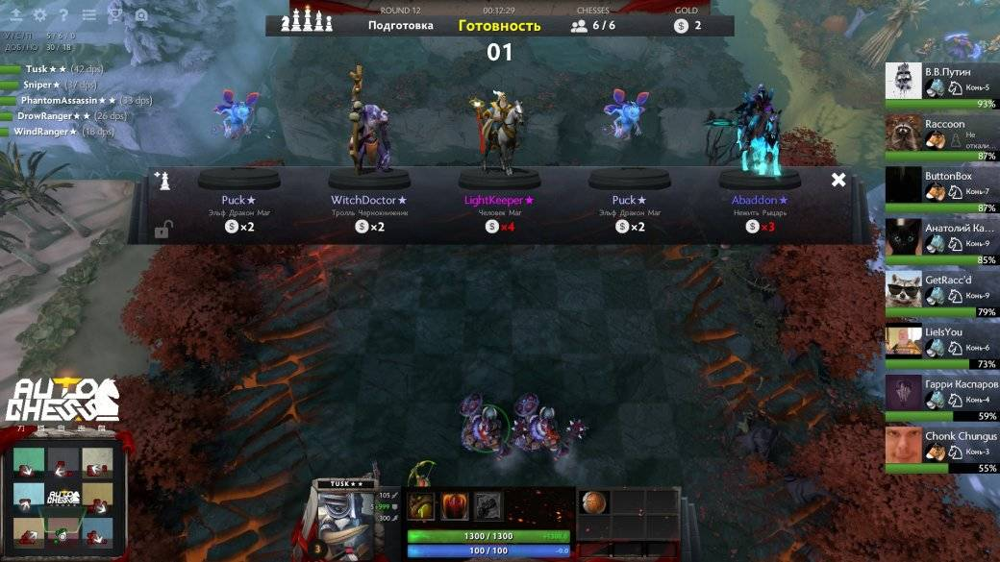
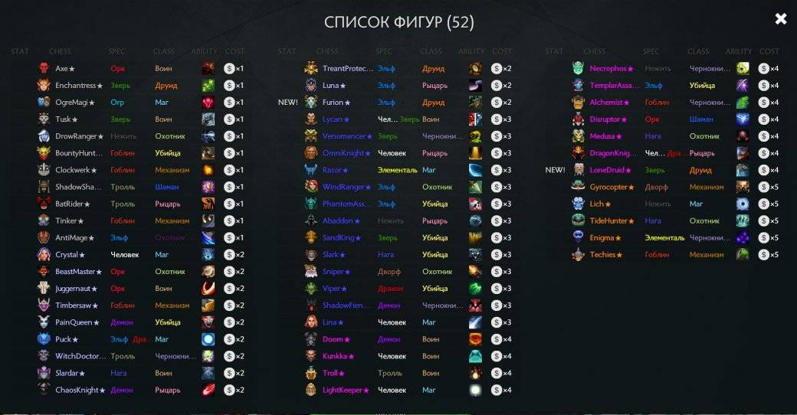
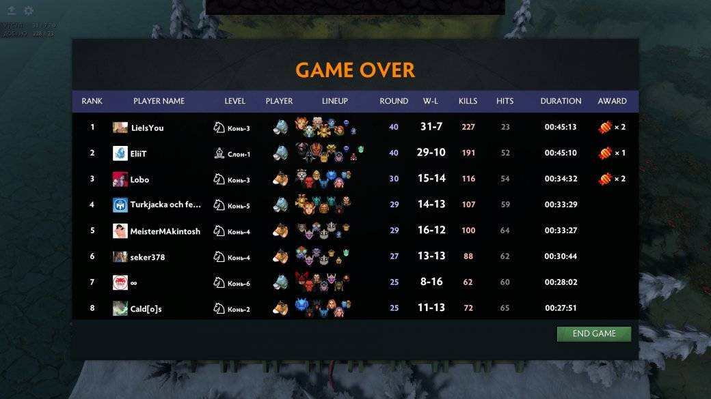

Новая кастомка к Dota 2 Auto Chess уже бьет рекорды. В нее играют десятки тысяч игроков, ее стримят и даже готовы проводить турниры.
Каждый день в Dota 2 появляются новые кастомки, но ни одна из них не производила такой фурор. Многие уже советуют Valve выкупить все права на кастомку и создать новую игру вокруг нее вместо умирающего Artifact.
В Dota Auto Chess игроку необходимо создать свою небольшую армию из героев Dota 2. Первые три раунда игрок сражается с крипами, а потом уже с армиями других игроков. Механика проста. Вы выставляете на поле определенное количество фигур (героев), после чего на вашей доске появляется армия другого игрока. Копия вашей армии при этом тоже отправляется к кому-то в гости. Если вы проигрываете бой на своем поле, то ваш курьер теряет здоровье. Как только показатель его жизней опустится до нуля, вы вылетаете.
Игра рассчитана на 8 человек. Длительность одной партии может превышать 40 минут.
После каждого раунда игроку даются деньги, на которые он может купить новых героев или улучшить курьера. На выбор игроку предлагают 5 героев, а за 2 золотые монеты можно обновить эту пятерку.
Уровень курьера влияет на качество предлагаемых в магазине героев. Чем выше уровень, тем больше шанс появления редкого героя. Редкость героев можно определить по цвету, которым написано его имя. Помимо этого уровень курьера определяет сколько персонажей вы сможете выставить на поле.
Каждый герой принадлежит к какому-то классу и расе. Главная задача — умело комбинировать персонажей. Нахождение на столе нескольких героев одинаковой расы или класса дает бонус. Например, три война дадут +8 брони всем воинам.
Героев можно улучшать — для этого нужно собрать трех одинаковых персонажей и выставить их на поле, тогда они превратятся в одного героя второго уровня. Чтобы апнуть персонажа до третьего (максимального) уровня, придется собрать трех героев второго уровня. И того нам потребуется 9 копий персонажа для максимального апгрейда.
Исключение составляют только Друиды — им достаточно двух копий для улучшения.
Почти каждый герой имеет активную способность, применить которую он сможет после получения 100 маны. Набирается мана автоматически при нанесении или получении героем урона.
С крипов, которые появляются раз в несколько раундов, игрок сможет получить предметы. Если дать их кому-то из героев, то забрать обратно уже не получится.
За попадание в тройку лучших игроки получают конфетки, которые можно обменять на скины для курьера.
Онлайн Dota Auto Chess переваливает за 100 тыс. человек. В ней уже предусмотрена калибровка и рейтинговая система. Забавно, что в Artifact на момент релиза подобных вещей не было. Судя по комментариям пользователей Reddit, Dota Auto Chess превосходит Artifact не только в этом.
Chess намного более вариативна, чем Artifact и при этом бесплатная. Выбор очевиден.
К тому же Dota Auto Chess проста в освоении, пускай в ней тоже большую роль играет рандом, но разнообразие стратегий это с лихвой компенсирует. За счет необходимости подбирать комбинации персонажей в игре уже появилось множество вполне рабочих стратегий. При выборе собственных героев всегда стоит смотреть и на то, чем играют соперники. Во-первых, это даст вам понимание того, как и каких героев стоит выставлять для победы. Во-вторых, от того, что собирает соперник, зависит и вероятность появление героев в магазине.
Чем меньше копий какого-то героя в партии, тем больше шанс его появления в магазине. Следовательно, собрать «непопулярных героев» и проапгрейдить их куда проще.
Низкий порог вхождения, разнообразие стратегий, возможность играть с друзьями и увлекательный игровой процесс — вот основные преимущества, которые отмечают игроки у Dota Auto Chess.
В свое время путь из кастомки в WarCraft III к полноценной игре проделала Dota 2. Теперь, возможно, схожее будущее ждет уже кастомку в самой «Доте». По крайней мере, предпосылки к этому есть.
Делитесь своими впечатлениями от Dota Auto Chess и победными сборками.